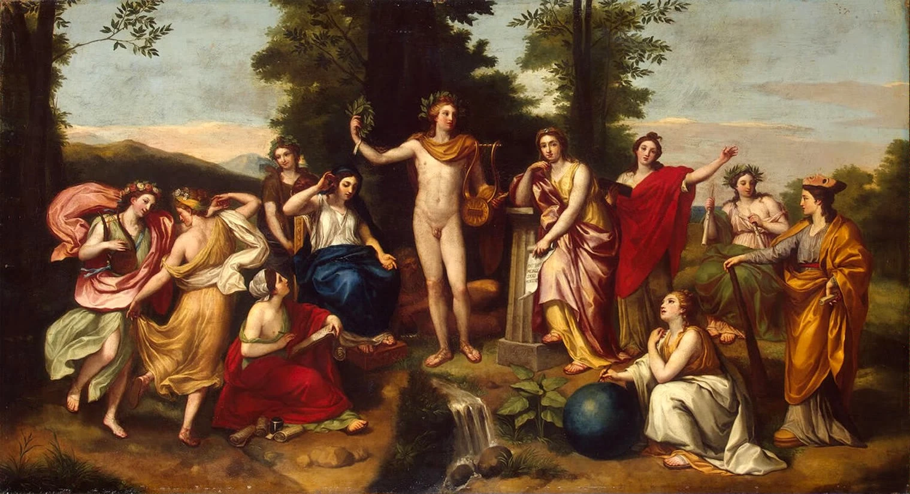
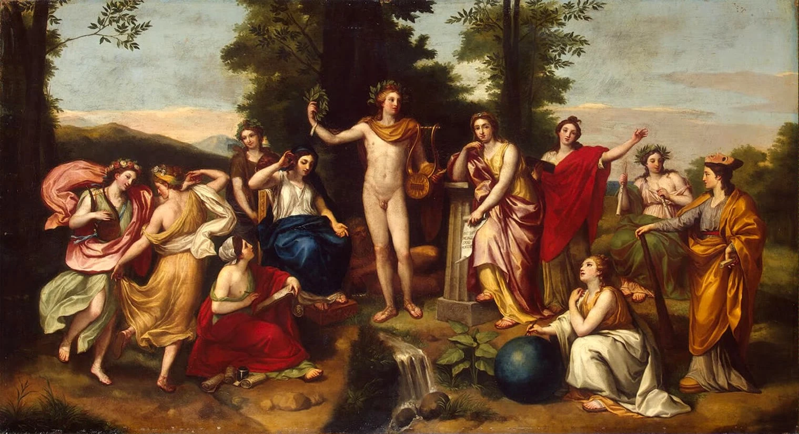
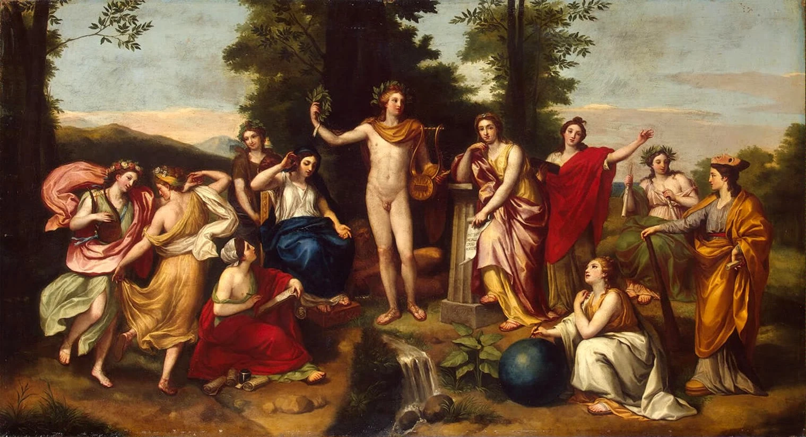
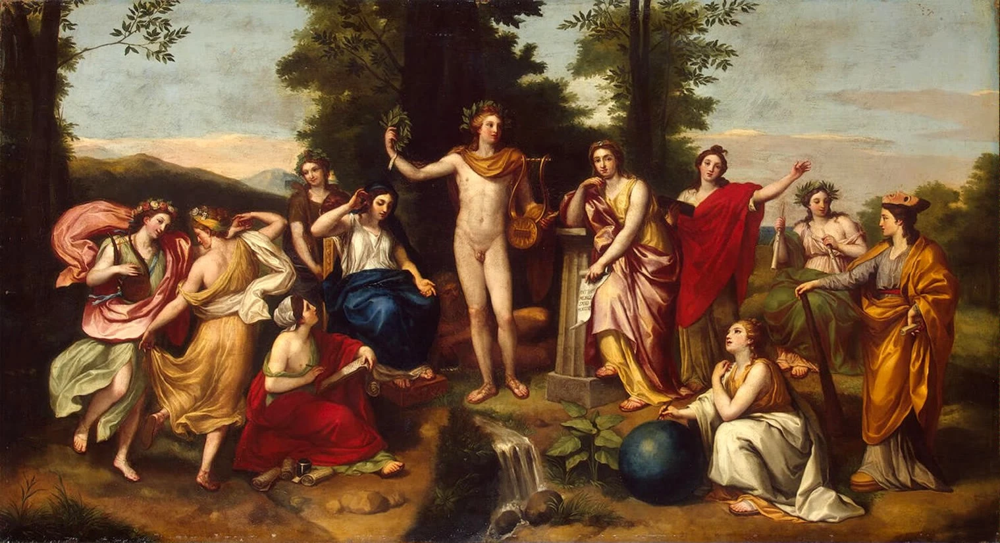

O classicismo na literatura portuguesa, que predominou entre o final do século XVI e o início do século XVII, é caracterizado pela busca de inspiração nas obras clássicas da Grécia e de Roma. Influenciado pelos ideais renascentistas, esse movimento enfatiza a razão, a harmonia, a clareza e a simplicidade.
Os escritores classicistas buscavam um ideal de beleza estética, valorizando a forma e a estrutura das obras. Na poesia, destacam-se autores como Gregório de Matos e Tomás Antonio Gonzaga, que exploraram temas universais e a natureza humana com um estilo formal e elegante.
Na prosa, o classicismo se manifestou em obras de caráter moral e filosófico, refletindo sobre a vida, a sociedade e a condição humana. Essa fase literária é marcada pela busca de um equilíbrio entre emoção e razão, e sua influência pode ser percebida nas gerações seguintes da literatura portuguesa, que continuaram a explorar os ideais clássicos.